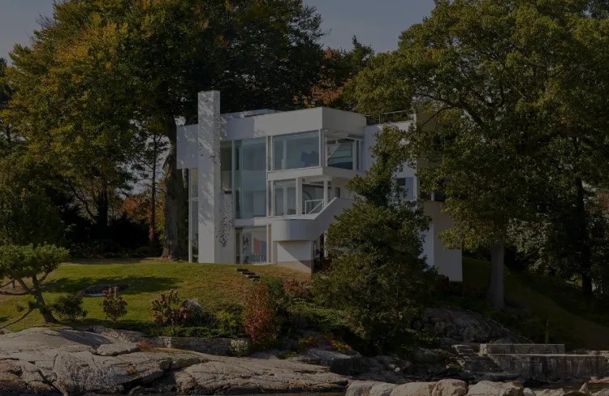

Smith House
Fondation Cartier
Nichée parmi les collines verdoyantes du Connecticut, la Smith House s'élève comme un exemple emblématique de l'esthétique minimaliste et de l'ingéniosité architecturale de Richard Meier.
Découvrons comment cette œuvre intemporelle s'intègre parfaitement dans le paysage bucolique qui l'entoure.
par Viktor Ghirardelli
Publié aujourd’hui | Temps de lecture 1 min
Genèse et Réalisation
La genèse de la Smith House remonte à la collaboration entre Richard Meier et les Smith, qui cherchaient une résidence contemporaine en harmonie avec la nature environnante.
Construite en 1965, cette maison devient rapidement un modèle d'architecture moderne. Les lignes épurées, les formes géométriques et l'utilisation judicieuse du verre définissent la signature distinctive de Meier.
Description Visuelle et Emplacement
Située dans le Connecticut, la Smith House se dresse comme une sculpture architecturale au cœur de la nature. Les murs blancs éclatants contrastent avec le paysage verdoyant, créant un tableau visuel saisissant. Les vastes fenêtres offrent une immersion constante dans la nature environnante, permettant aux résidents de vivre en symbiose avec leur cadre.
L'intérieur de la Smith House est une célébration de l'espace et de la lumière, avec des espaces ouverts qui favorisent la fluidité et la connexion avec la nature. Les matériaux modernes, tels que le béton et le verre, confèrent à la résidence une élégance intemporelle.
Galerie
Découvrez la Smith House conçu par Richard Meier en explorant cette galerie d'images détaillée.